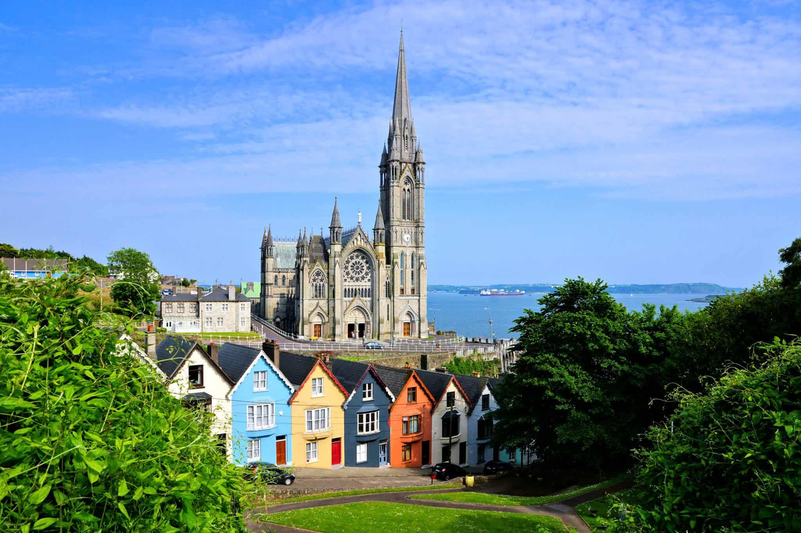

Cork is the second largest city in Ireland, located in the south-west of Ireland, in the province of Munster. Following an extension to the city's boundary in 2019, its population is c. 210,000.
The city centre is an island positioned between two channels of the River Lee which meet downstream at the eastern end of the city centre, where the quays and docks along the river lead outwards towards Lough Mahon and Cork Harbour, one of the largest natural harbours in the world.
Originally a monastic settlement, Cork was expanded by Viking invaders around 915. Its charter was granted by Prince John in 1185. Cork city was once fully walled, and the remnants of the old medieval town centre can be found around South and North Main streets. The third largest city by population on the island of Ireland, the city's cognomen of "the rebel city" originates in its support for the Yorkist cause in the Wars of the Roses. Corkonians sometimes refer to the city as "the real capital", a reference to its opposition to the Anglo-Irish Treaty in the Irish Civil War.